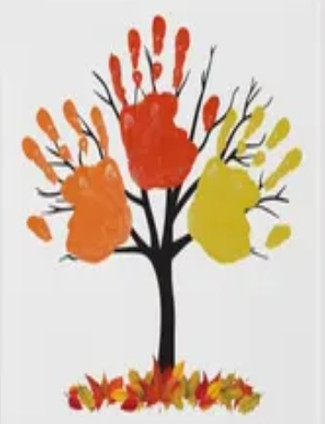

Toddlers
The First Impression
This is a handprint impression of the child’s RH and LH, with thumbs crossing. The child will glue a precut tree trunk with branches onto the canvas.
They will choose the same or different colours for their hands and name their colour choices. Using a stamp, they will add “hand leaves” at the bottom of the trunk.
Colours: Red | Yellow | Orange
Project Duration: 4 Days